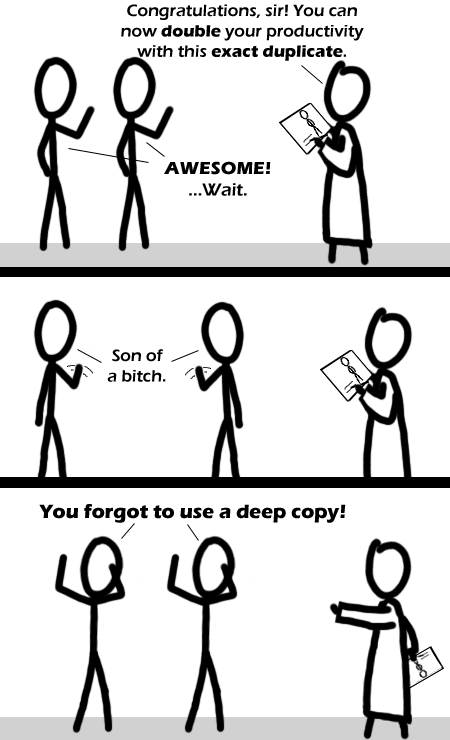

Comic JK 360
When I Feel Like It
⇤
<
?
>
⇥

⇤
<
?
>
⇥
Forum
.
RSS
.
Digg
.
Facebook
.
Reddit
.
Twitter
.
Stumbleupon
Enter your thoughts on number Xbox here. Please donate spamming, trolling, or phreaking. >Lol Hahaha, excellent. wtf is this omgggggg i love this comicccc Why do they look mirrored on the 2nd panel? >Because they are facing each other. >> Shouldn't be possible in this instance (as long as it is supposed they decided to face each other by themselves)... but I wonder, what happens if they both try to get through a narrow door? However, gave me a good laugh anyway >>>If the world is writ in python or ruby, just del one of them, the other won't get garbage collected because of the refcounting scheme... >>>>There's how you break the duplication: just have him/them walk through a door that's too narrow to admit both together. Or chuck that iPad at them and say "catch!" From that point on they'll drift further out of sync and you'll have two distinct individuals. >>>>>The whole point is that they never were distinct because they are shallow copies... they will always do the same things, even if in different places. >>>>>>So if one of them tries to walk through the door, they'll stop as soon as the other one hits the wall. Quantum mechanically speaking ... how DO you make a deep copy without destroying the original? >You don't. That's exactly the problem he has. >>Fuzzy math? Make minor errors which partially decoupe the system? Have you head explode trying to figure it out? This reminds me a bit of the following logical statements: "The next sentence is false. The previous statement is true." >>> You can make it shorter: This sentence is false. Or even: I always lie. >>>> Nah. Last one is crap. You could've like said the truth once in your life and it doens't work anymore. >>>>>erm... it's not that... "I always lie" - if he does always lie, then that statement is true - thus making it false because he hasn't lied... it's a Schroedinger Statement... >>>>>But if he just lies this time, and not always, it is simple. >>>>>>It's not problematic, because there's no contradiction if we assume the speaker sometimes lies. Then his statement is a lie, and that's all. It WOULD be problematic iff the speaker either always lied or always told the truth, but could NEVER lie only part of the time. >>>> "This sentence is false." If that statement true then it must be false because that's what it says it is (but if it's false then on which authority are we basing our conclusion on? Not that statement's, surely); if it's false then it must be true because that would be the negation of what it says (but if it's false then does it really matter what it says?) Or maybe it's an example of a statement that is neither true nor false. More TBH! More TWH! > Yeah! TBH owns! Still, productivity _would_ be doubled if the guy's an assembly-line worker. >erm... no it wouldn't... productivity is output per unit input factor - in this case workers. Adding another worker to the assembly-line might increase output - ( assuming other inputs are not the limiting factors ) - but not productivity. Raising the productivity would require output to be maintained or raised, while created by fewer workers... >>That depends entirely on whether this copy requires an additional paycheck, whether it needs to eat separately, etc. Adding a worker but not increasing the wages that are handed out would indeed increase productivity. >>>Both copies working perfectly in unison; perform the same copying stunt on other parts of the production line (rather, concentrating on the bottlenecks). You can use them to transfer information instantaneously regardless of distance. >Unless there's a lightspeed delay; it wouldn't be visible at this range. That's what would happen if you really did make a shallow copy of an object on a *huge* computer. >>Who says the Universe isn't a huge Computer :) >>>don't spread that suggestion too widely, lest the Universe get rebooted :| >>>> ``There is a theory which states that if ever anyone discovers exactly what the Universe is for and why it is there, it will instantly disappear and be replaced by something even more bizarre and inexplicable. >>>>>haha uncyclopedia reference ftw There is anoWOOOOOOOOOOOOOO!